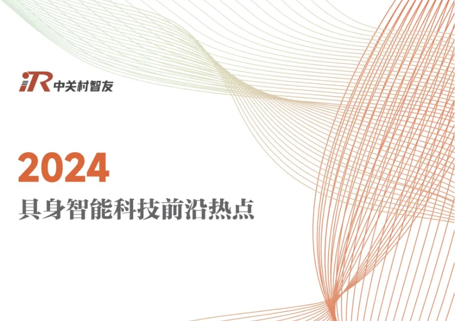
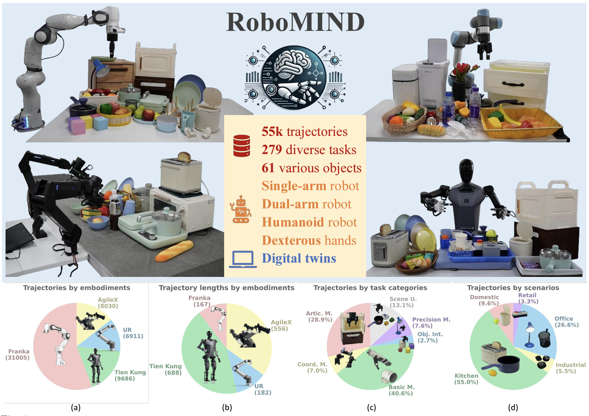
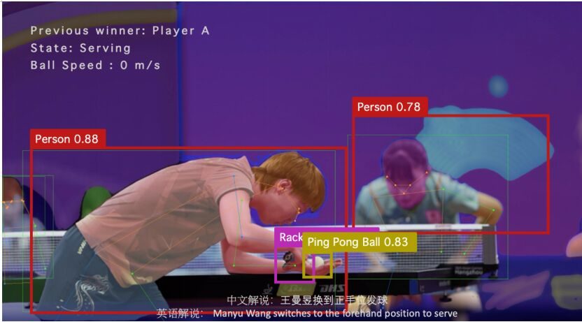
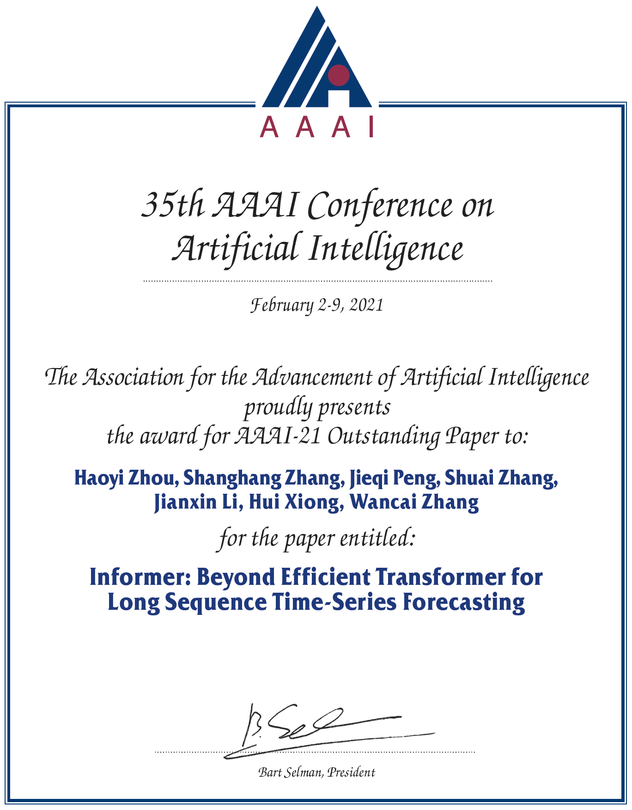

RoboMamba入选2024具身智能科技前沿热点
Jan 06, 2025 Source: Xbot
|  |
|
在科技浪潮汹涌澎湃的今天，具身智能脱颖而出，成为备受瞩目的前沿领域。具身智能的应用广泛，深刻影响着诸多行业，从制造业到医疗，从家居到娱乐，正重塑社会运行逻辑和生活方式，成为推动经济社会发展的新动力。人工智能和机器学习发展推动具身智能技术突破，具身大模型整合多模态信息提升机器人灵巧操作能力，在多行业广泛应用。2024 年，众多企业积极布局，如 Pi、Skild AI 等，市场投资活跃，中国具身智能领域投融资事件达 38 起，金额 51.1 亿元，预计市场将爆发式增长。
北京大学 RoboMamba：2024 年 6 月推出，采用先进多模态设计，集成视觉编码器与线性复杂度状态空间语言模型，通过高效微调策略，在推理和操控方面表现卓越，推理速度达现有模型三倍，在模拟与现实实验中精准完成任务。
|
国家地方共建具身智能机器人创新中心与北京大学仉尚航教授团队联合推出具身智能数据集
Dec 30, 2024 Source: Souhu
|  |
|
国家地方共建具身智能机器人创新中心与北京大学计算机学院仉尚航教授团队联合推出了一个重要的具身智能数据集——RoboMIND。此次发布标志着中国在具身智能领域的一次新突破，为人形机器人及多种形态智能机器人的训练提供了全新的数据基础。这一数据集的推出，将极大促进机器人在复杂环境中进行长程任务的能力提升，使其在实际应用中更为聪明和高效。RoboMIND是一个大规模、多构型的智能机器人数据集，涵盖了多种机器人形态，包括单臂机器人、双臂机器人和人形机器人。该数据集包含5.5万条机器人轨迹数据，涉及279项不同的任务和六十一种不同类别的物体，涵盖了家居、厨房、工厂、办公及零售等多种现实生活场景。这种数据集的多样性帮助机器人“见识”不同的物体和环境，类似于学生在学习中接触到的各种题型，从而提高其操作能力。 |
仉尚航教授团队研发“黑科技”服务杭州亚运会
Oct 07, 2023 Source: Xinhua
|  |
|
为服务杭州亚运会，践行“智能”办赛理念，在北京大学黄铁军教授、仉尚航研究员的指导下，团队基于多模态大模型研究，结合视觉、语言、语音等多种模态输入，推出AI多语种解说系统，为观众提供丰富的观赛体验。
北京大学学生团队为帮助应对大赛期间比赛项目多、小语种需求大等问题，面向乒乓球、跆拳道、跳水、体操等赛事，推出AI多语种解说系统。据介绍，该系统可以辅助录播频道调用多模态大模型，理解视频内容，生成中文、英语、阿拉伯语等多语种解说，扩大覆盖人群。这一技术通过高速摄像机的脉冲信号检测场景物体和运动员，能够捕捉体育比赛中的关键时刻，生成高质量的集锦和相关数据，并基于多模态大模型算法和深度学习模型进行分析，根据分析结果提供个性化解说服务。 |
仉尚航教授荣获人工智能顶级会议AAAI‘2021最佳论文奖
Nov 15, 2021 Source: Zhihu
|

|
|
仉尚航教授荣获人工智能顶级会议AAAI‘2021最佳论文奖。
在很多现实应用问题中，我们需要对长序列时间序列进行预测。长序列时间序列预测(Long sequence time-series forecasting, LSTF)要求模型具有较高的预测能力，即能够准确地捕捉输出与输入之间的长期依赖关系。近年来的研究表明，Transformer具有提高预测能力的潜力。然而，Transformer存在几个严重的问题，使其不能直接适用于LSTF，例如二次时间复杂度、高内存使用量和编码器-解码器体系结构固有的局限性。为了解决这些问题，本文为LSTF设计了一种高效的基于Transformer的模型，名为Informer。
|